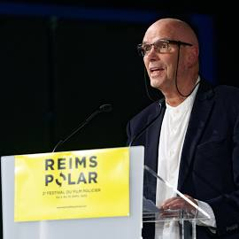

Entrevista con el director de "Límite vertical"

Hoy tenemos el privilegio de hablar con Carlos Morales, director de "Límite vertical", el thriller psicológico que está arrasando en PrimeView.
Los orígenes del proyecto
P: ¿Cómo surgió la idea para "Límite vertical"?
Carlos: "Todo comenzó con una experiencia personal. Hace años quedé atrapado en un ascensor durante 4 horas. Esa sensación de claustrofobia y vulnerabilidad fue el germen de la historia."
El reto técnico
Grabar el 80% de la serie en un espacio tan reducido como un ascensor presentó desafíos únicos:
- Set modular que podía desmontarse para diferentes ángulos
- Uso de 7 cámaras ocultas en el decorado
- Luces LED programables para simular movimiento
La preparación de los actores
"Trabajamos con un coach de método para que los actores experimentaran realmente el encierro. Los encerramos en un ascensor real (con seguridad) durante sesiones de 2 horas."
¿Qué viene después?
Carlos nos adelanta su próximo proyecto:
"Estoy desarrollando una miniserie sobre los misterios del metro de Londres en los años 70. Será otro ejercicio de tensión en espacios confinados, pero con un enfoque histórico."